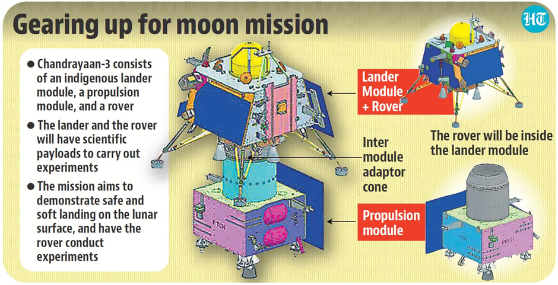
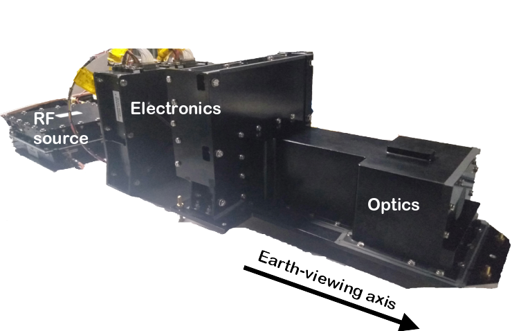
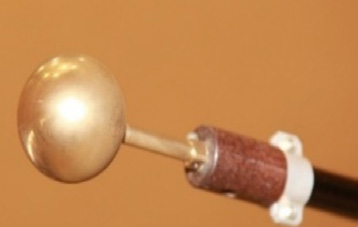

CHANDRAYAAN 3: IN CONVERSATION WITH SCIENTISTS AT ISRO
CHANDRAYAAN 3
The success of the Chandrayaan 3 mission is a significant milestone as it not only makes India the fourth nation to successfully soft land a spacecraft on the moon but also the first to land on the south pole, which has been unexplored until now.
But why is there a larger interest in the moon's South Pole?
Due to the moon’s tilt, only the elevated peaks at the lunar south pole are lit by the sun, and the low-lying areas in the region are permanently shrouded in shadow. The temperatures in these permanently shadowed regions (PSRs) can drop extremely low, implying that any water molecule that enters the area is immediately frozen, making it an ideal spot to maintain water ice. In 2008, India’s previous lunar orbiter, Chandrayaan 1, confirmed water's presence in icy craters on the south pole.
The findings of Chandrayaan 3 can have enormous implications for future human missions by harvesting water as fuel, breathable oxygen, or drinking water. It opens up a possibility for a staging mission (To lighten the vehicle's weight to achieve orbital velocity; most launchers discard a portion of the vehicle in a process called staging) to Mars launched from the moon someday, which is an incredibly exciting prospect for future space exploration!
The Chandrayaan 3 began its two-week mission (1 lunar day) after it landed on 23rd August 2023 to explore the south pole of the Moon. It consists of three main components - the Propulsion Module (PM), the Lander Module and the Rover.
- A propulsion module (PM) carries the lander module to the final lunar 10km circular polar orbit and launches it and has a scientific payload whose objective is the future discoveries of exo-planets for habitability.
- The Lander module’s function is to soft land on the lunar surface and deploy the rover. The lander payload aims to measure the near-surface plasma density, thermal properties, and seismicity around the landing site.
- The rover payloads (a payload is a scientific or technological instrument carried on board a satellite for a specific purpose) aim to determine the chemical composition and infer the mineralogical composition of the lunar surface in the region.
This is the first of many missions the Indian Space Research Organisation (ISRO) has planned for space exploration and resource mining. Aditiya L1 was also recently launched, which will function as a space weather station. This mission promises to offer previously unknown insights about the moon that will help advance space exploration in the future.
Introduction and Background
Insight had the opportunity to interview Brajpal Singh, a second-year MTech student and Naresh Sanke, a first-year MTech student at IITB who were directly involved in the glorious Chandrayaan 3 mission. Brajpal and Naresh completed their BTech in Electronics and Avionics, respectively, from IIST (Indian Institute of Space Science and Technology).
In Naresh’s words, “I was always interested in mathematics and physics and deeply loved engineering. I remember following the journey of Chandrayaan 1 in awe, on the news and wondering how something incredible like that happened.” Brajpal, too, had always aspired to be a scientist and was particularly fascinated by the mysteries surrounding extraterrestrial life.
Before joining IITB, they worked at ISRO and contributed towards this celebrated mission. Brajpal spent three years working on the electronics part of the SHAPE payload, whose purpose is to study Earth's spectral and polarimetric measurements from lunar orbit. This will help the scientists to mimic the observation of a far-away exoplanet. Naresh, on the other hand, worked on testing the RAMBHA payload, which measures different parameters of the plasma above the moon's surface, which he had also done for Chandrayaan 2. Although he has worked on the Chandrayaan 2 and 3 missions, he is closest to the Aditya L1 mission as he has devoted the majority of his time at ISRO working on it.
Journey and Experience at ISRO
Brajpal was placed in ISRO’s URO satellite center in Bangalore in August 2011. In 2019, he was placed in the Space Astronomy group to make an observational payload, the SHAPE (Spectro-polarimetry of HAbitable Planet Earth) payload for the Chandrayaan 3 mission. Talking about his work on Chandrayaan 3, he said, “Making it (Chandrayaan 3) was challenging, especially after previous successful space missions, because the pressure of doing something new was high, and you never repeat a machine at ISRO”.
Naresh joined ISRO in September of 2018. He was placed in the Thiruvananthapuram centre, where he trained for three months after which he joined the electronics design division. Reminiscing about his time at ISRO, he says,“One’s experience at ISRO depends largely on where they’re posted. There are places where every day is a challenge and others where some days might be uninteresting. Nevertheless, my deliverables aligned with my Avionics degree, unlike some of my colleagues who were placed in entirely unrelated disciplines.”
When asked about the team culture at ISRO, both scientists agreed that the environment at ISRO is excellent. “There is no strict hierarchy, and juniors are always encouraged to question and counter their seniors. Everyone is open to listening to new ideas, and they have always felt free to express their views.”, says Brajpal.
An example of such an interaction is the SHAPE payload itself on which Brajpal worked. One of his colleagues, a junior scientist at ISRO, proposed the idea of the payload just three years before the mission deadline which was accepted wholeheartedly. A team with several scientists with different experiences was assembled, and the junior scientist who had devised the idea took the lead.
When asked about the freedom to pursue personal ideas and the support available for the same, Brajpal commented, “At ISRO, scientists also have the liberty to work on new ideas and pursue them independently in their extra hours. There is never a block in our mind about our idea not being executed. We share our work and responsibilities, and that’s how we achieve success.”
Contribution to Chandrayaan 3
The Space Astronomy group is responsible for making payloads that make space observations, very similar to the Hubble Telescope and the JWST (James Webb Space Telescope).
The Propulsion module of Chandrayaan 3 has only one scientific payload, and Brajpal worked on the electronics subsystem for it. The Chandrayaan 3 original mission plan did not involve a payload; its only job was to take the rover to the moon. However, Brajpal and his peers did not want to let go of the unique opportunity of being on the Moon. They decided to use this opportunity to make a payload to observe Earth from the vantage point of the Moon. The decision to incorporate the SHAPE payload into the mission plan was taken way after the work on the Chandrayaan 3 mission started; “We kind of pushed ourselves in the middle (of the mission)”, said Brajpal.
The idea of the SHAPE payload was developed. It is an experimental payload onboard the Chandrayaan-3 Mission to study Earth's spectro-polarimetric signatures in the near-infrared (NIR) wavelength range (1.0 – 1.7 μm). The purpose of the payload is to observe our planet Earth from the moon and help in future discoveries of smaller planets in reflected light, allowing us to probe into various exo-planets that qualify for habitability. The SHAPE payload demonstrates new technology for both sensing purposes and scientific interest.
The work on the payload started when COVID-19 was at its peak, in the form of endless online discussions where the team finally arrived at the final design. As COVID subsided and the lockdown lifted, it was time to turn the design into reality. The team's timely completion of the task at hand became crucial at that stage because any delay would have resulted in its exclusion since the mission could not be delayed.
“Three years is very little time to work on a payload that will be a part of this big mission”, says Brajpal. To put it into perspective, the Hubble telescope was launched 20 years after its planning, and the JWST after 30 years!
Naresh was also involved in the Chandrayaan 2 mission, which he had joined in its final leg of completion to conduct the tests for payload qualifications as a part of the qualification team. For Chandrayaan 3, his group was supposed to make a replica of the previous payload, called the RAMBHA-LP payload - The Radio Anatomy of Moon Bound Hypersensitive ionosphere and Atmosphere - Langmuir Probe, named after American chemist and physicist Irving Langmuir, who was awarded the Nobel Prize in Chemistry. The Langmuir probe is a device used for characterising a plasma.
This mission holds immense scientific importance. While discussing the significance of Chandrayaan 3, Naresh highlighted that even though India made the mission possible, other member nations at BRICS were excited and rooting for its landing, making it a global achievement. It was of monumental significance in the history of Science, since it was the first time that the southern region of the moon was being explored, and new data was going to be recorded. The findings would have the potential to open up the door for endless future possibilities.
Experience of working on Space Missions:
When asked about what was something that they loved most about working on the mission, Brajpal said, “I like the interdisciplinary nature of the work the most. Even though I come from an electrical background, I cannot keep myself limited to it; I need to think from mechanical and structural perspectives and consider their limitations when working on the assembly. For example, the PCB (Printed Circuit Board) risks breaking in a harsh space environment. Therefore, the electronics must be combined with adequate mechanical, structural, and thermal knowledge.” He firmly believes that interdisciplinary expertise and gaining a broader perspective are essential for a person if they aim to achieve something big in their field of interest.
Naresh also insisted that the work is highly interdisciplinary. He stated, “I had to test the sensor and electronics part for the Aditya L1 payload which aims to measure solar winds. The team responsible for this testing consisted of the electrical, mechanical science, and integration subsystems. The subsystems gather in review meetings, and each sub-system learns from the other in a collaborative environment. It also challenges them to integrate and solve the constraints caused by other subsystems into their mechanisms.”
Motivation and Challenges:
“Most space science missions run on for years, but what keeps us scientists motivated in such long and daunting time frames is that everyone loves challenges at ISRO”, says Brajpal when asked about how the scientific community at ISRO keeps itself motivated to work on missions that yield results after years. “They solve problems one at a time, and at the end of three years, they realize they’ve managed to make an entire satellite ready to go to the moon!”
While talking about his work, Brajpal passionately mentioned, “Although the work is rigorous and challenging, it feels very rewarding, and I will never get tired of it. I remember every problem put forth to me during the mission. I would work on them all night and often find solutions early in the morning after hours of struggle.”
While speaking about his challenges, Naresh told us about the technical challenges that arise while learning and doing something new, about working over the weekends to meet deadlines, and personal challenges resulting from staying away from home. However, he was able to survive through it all because, as put in his words, “My team helped me push through it all. It is the act of learning something new and fascinating every day that motivates them to overcome challenges.”
Space missions like these require a lot of precision, and tiny errors can add up to a considerable error, which could be catastrophic. In the context of Chandrayaan 3, Naresh said, “So many things could have gone wrong, and it still landed! In the last stage of the landing, it stopped, hovered over a spot, figured out it was not an optimum spot to land, and landed elsewhere. That design getting validated felt amazing!”
It is a proud moment for the nation, and speaking about pride, Naresh commented that he feels happy about his work and contribution at ISRO. However, for him, he says, “Satisfaction comes from an outer perspective, like when my brother told me how proud he is of our work.”
Future Missions:
In the future, Brajpal wishes to work on missions like Gaganyaan, which is a part of the broader Indian spacefaring ambition that extends to potential human missions to the Moon and Mars. He would love to be a part of any space exploration mission that ISRO does. The question of whether or not we are alone in this universe excites him the most about his work, and he holds a strong interest in participating in any future missions aimed at exploring the existence and mysteries of extraterrestrial life.
Parallel to Aditya L1, Naresh also worked on the Venus Orbiter Mission, set to launch in December 2024. In his previous missions, he worked mainly on the payload testing mechanisms. However, in the Venus mission, he helped design the payload from scratch. After finishing some preliminary designs, he came to IITB for his Master’s and was relieved from ISRO for two years. Like his peers, he gets utterly fascinated by how the universe works, which inspires and motivates him to continue doing what he does.
A word for Space enthusiasts:
When asked what he would like to tell the students who wish to pursue a career in space science, Brajpal commented, “Students often perceive space science as something that is all glittery and glamorous when they think of it as a field they want to pursue their career in. Movies glamorise it as well and don’t show the hard work, grind and perseverance behind it. Missions such as Chandrayaan are full of unexpected challenges at every single turn. The motivation and craze to make an idea work and the curiosity and interest to figure out why something is not working are needed in every individual who is a part of the mission. Work can get challenging sometimes, and as technology advances, one needs to constantly upgrade their skills and knowledge to keep up with the demand of the times.”